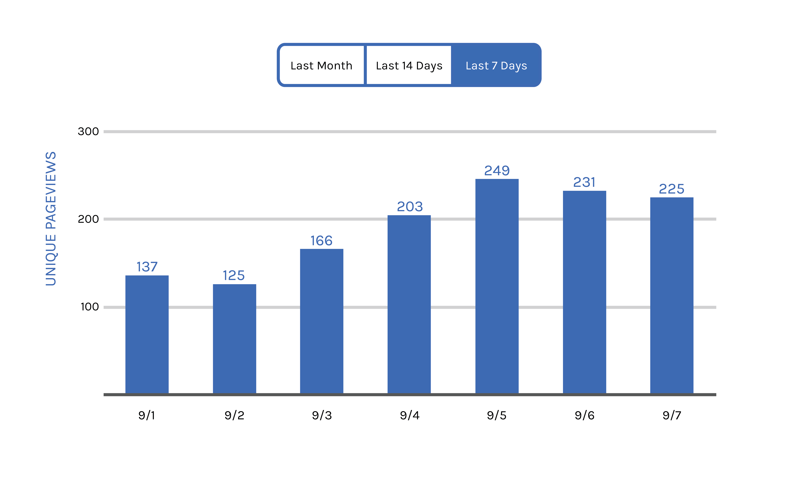
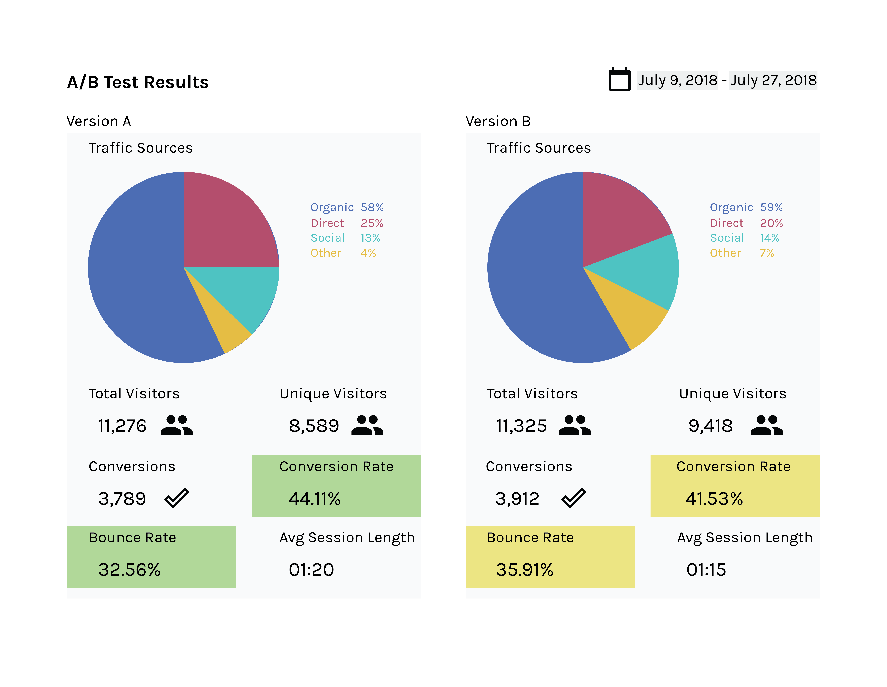

UI Sketches: Analytics Dashboards
The following UI sketches are designs of analytics dashboard elements inspired by my work as a business data analyst.

Simple visualization of pageviews to a site page where a user could easily toggle between seeing the data over the last 7 days, 14 days, or the previous month.

Visualization of A/B test results where a user could change the date range of the data presented. The system highlights metrics of the test version that performed the best in green. The lower performing version is yellow if within a reasonable range or red if performing very poorly.